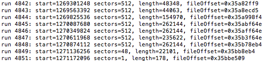
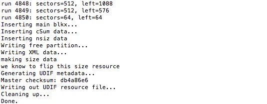

Preparing RootFS
In the next part we'll repartition device's disk storage to create 2 additional partitions for second OS. After that we'll restore iOS root filesystem (also known as RootFS) disk image to one of them. Best way to do it - use ASR (Apple System Restore) - instrument from iOS ramdisk which is used to restore RootFS in native restores/updates. But in order to take advantage of it, original DMG image must be decrypted and converted back to UDZO disk image format (more info here)Decryption
First of all, we need to decrypt and extract original RootFS image:dmg extract originalRootFS.dmg decrypted.dmg -k key
Keys may be obtained from The iPhone Wiki
In case of successful decryption, you'll see something like this in the end of log:

Convertion
To be able to pass our decrypted image to ASR, we need to convert it to UDZO Image Format - UDIF zlib-compressed read-only image. After decryption it becomes UDRW - UDIF read/write imageWe still need to use dmg:
dmg build decrypted.dmg UDZO.dmg
In the end of process you'll see something like this:
That's all. Now it's time for repartition